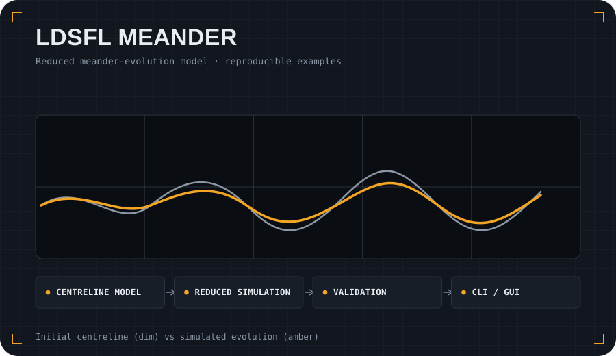

Problem
Meander morphodynamics involve interacting flow, curvature and sediment-transport effects. Reduced models are useful for exploratory simulations, sensitivity studies and understanding key mechanisms before using heavier numerical models.
Approach
- Represent a river centreline and its curvature in a reproducible Python workflow.
- Run reduced meander-evolution simulations with documented assumptions.
- Provide visual outputs and example cases for validation and review.
- Support both command-line and graphical workflows.
What it demonstrates
This project shows scientific software depth: numerical modelling, documentation, tests, a user manual, reproducible examples and honest communication of model scope and limitations.
git clone https://github.com/sergioald/LDSFL_Meander.git
cd LDSFL_Meander
python -m pip install -e .
# see the repository README and user manual for examples
cd LDSFL_Meander
python -m pip install -e .
# see the repository README and user manual for examples